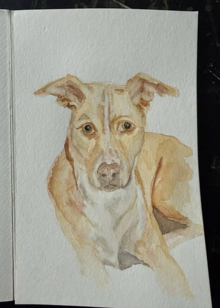
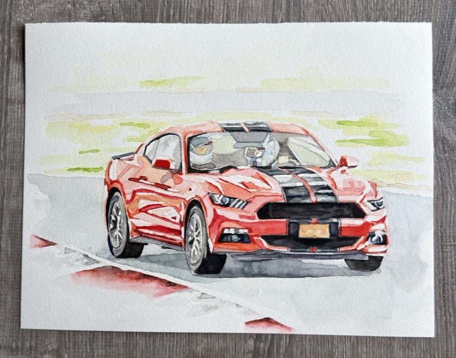
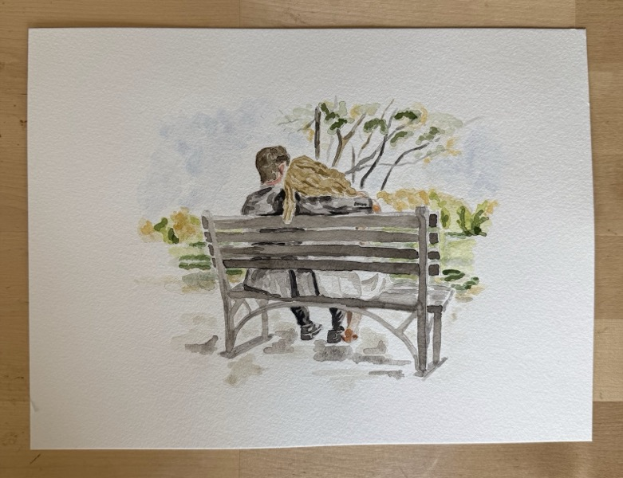
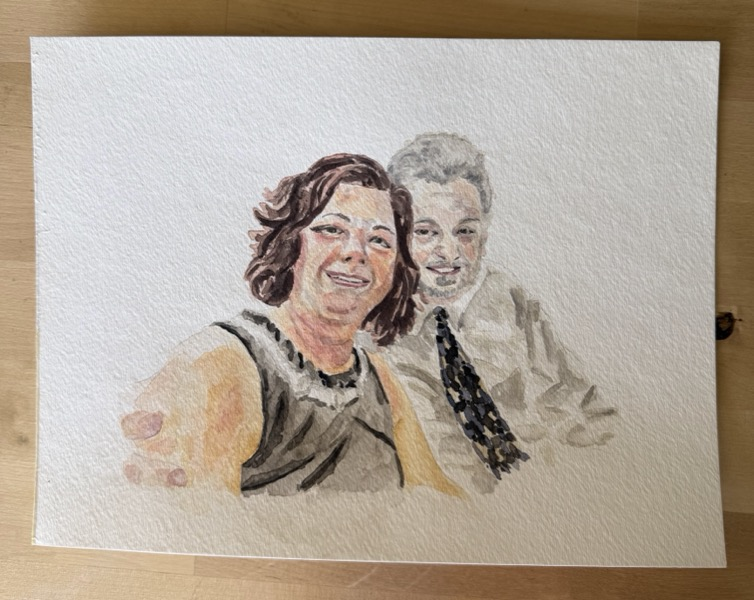
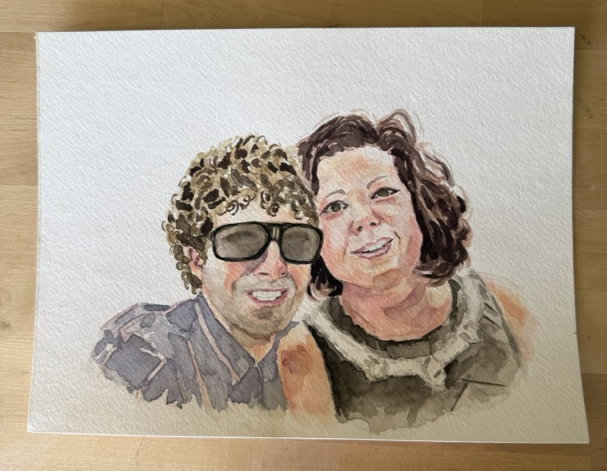
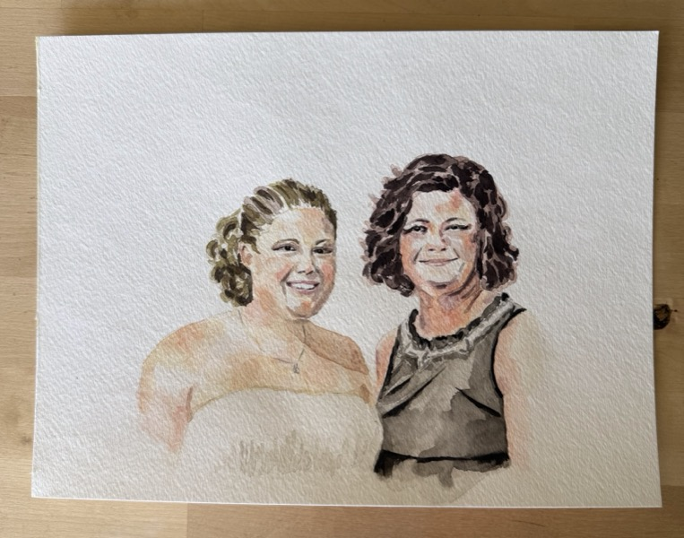
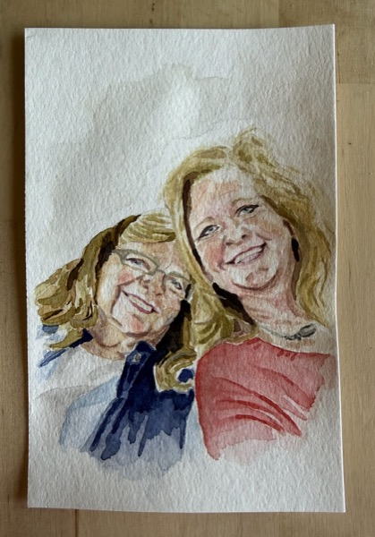
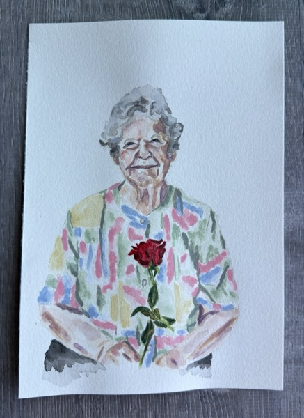
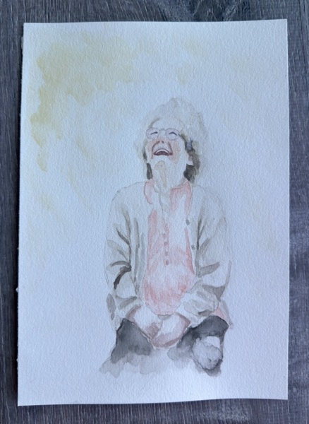
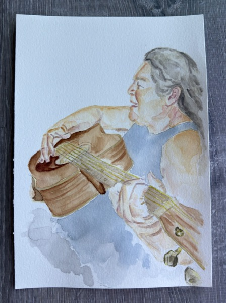

Let me turn your memorable moments into a painting. A special pet, loved one, or place of meaning to you. I would be honored to create a piece that's dear to you.
I'm currently offering watercolor painting commissions.
Please reach out via the inquiry button and let's discuss the details.
Request a commissionA commission is a one of a kind artwork made just for you. I work from your favorite photos to capture a likeness, mood, and small details that make a subject yours. Paintings are such a beautiful way to commemorate what's important to you.
Commissions make meaningful gifts for holidays, anniversaries, birthdays, and memorials. There's just something extra special about receiving a piece of artwork meant just for you.
Have an idea I did not mention? Let me know and I'd be happy to talk through any subject.










Looking forward to connecting and creating a lasting keepsake for you.
Request a commission